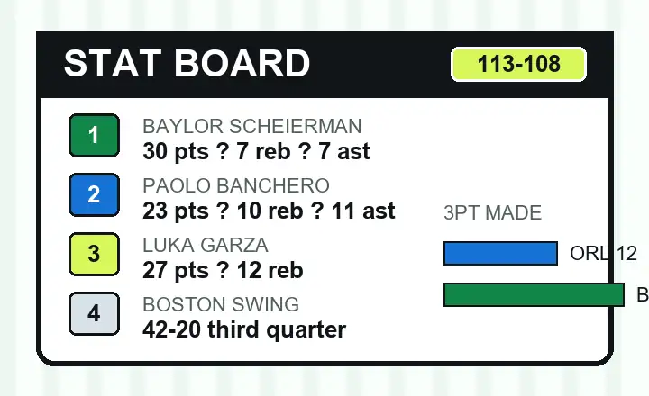

Boston beat Orlando 113-108 because the third quarter rewrote the night.
Orlando had the better first half. Boston had the quarter that decided the game. The Celtics used a 42-20 third quarter to flip a nine-point halftime deficit into a lead they protected through a low-scoring fourth.
Boston's young group carried the scoring
Baylor Scheierman led Boston with 30 points, 7 rebounds, and 7 assists. Luka Garza added 27 points and 12 rebounds, while Ron Harper Jr. scored 27 with 7 rebounds and 4 assists. That trio gave Boston enough offense on a night where the Celtics needed every clean half-court possession.
Orlando's best line belonged to Paolo Banchero
Banchero finished with 23 points, 10 rebounds, and 11 assists. That triple-double kept Orlando's offense connected, even with the Magic shooting below 40 percent from the field and below 28 percent from three.
The math that decided it
Orlando won the rebound battle 62-50 and scored 40 fast-break points. Boston still found the better winning formula by making 19 threes, going perfect at the free-throw line, and turning turnovers into a 23-11 points-off-mistakes edge.
Why the fourth quarter still mattered
Boston only scored 19 in the fourth, so this was not a clean runaway. Orlando had chances to make the third-quarter damage feel survivable. The problem was that every late possession had to fight through the earlier swing. Once Boston had the lead, the Magic needed both stops and cleaner shot quality, not just pace.
